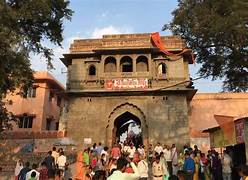

KAAL BHAIRAV TEMPLE
The Kal Bhairav temple is a Hindu temple located in the Ujjain city of Madhya Pradesh, India. It is dedicated to Kal Bhairav, the guardian deity of the city.Located on the banks of the Shipra River, it is one of the most active temples in the city, visited by hundreds of devotees daily.Liquor is one of the offerings made to the temple deity.
